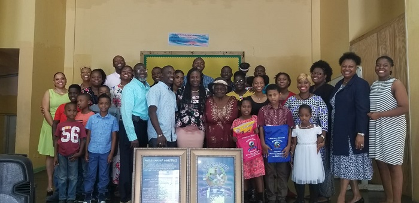

It Takes A Village

Dr. Collie (Back row, middle) along with his Church and Family.
Residency in Jamaica at The University Hospital
of the West Indies

A day in the office with Dr. White & Dr. Collie.
Daily Companion
An extra eye to see the little Things